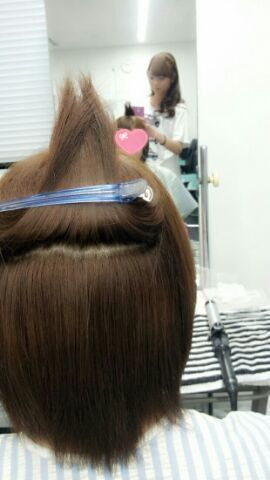

はい。Rottyです♪
ここ最近、２週間ほど
歯ブラシがしっくりこないと
思いながら使っていました...
でも 今日から 歯医者さんで
もらった歯ブラシに変えました。
うんっ/
マカロンみたいな
オレンジ色の歯ブラシ‥
しっくりくるです(・ω・)
わーーーーい☆
前は真っ赤な歯ブラシ ))
その前は クリスタル透明の ))
その前は ピンク・紫色の ))
まっ
色は関係ないんですけどねん
(*´∨`*)笑
あれだね、ブラシの部分が
今のはちょーどいい柔らかさで
めちゃキモチぃーー\(〃∨〃)/
そんな感じで
今は名古屋のホテルです‥。
そう^^ 明日は名古屋で
個別握手会ですっ♪
今まで 5部だったんですけど
今回 名古屋は 2部になりました☆
嬉しいです(*´∨`*)
まひろいつも5部で
こんな時間まで待たせちゃって
悪いなぁ(´；ω；｀)と
思ってて‥
新幹線の時間とかもあるしね.
でも 2部からだから
お昼位でいい感じ(〃∨〃)!
よかた.
本当楽しみだお.
楽しみに待ってます♪
それと 久しぶりにメンバーと
名古屋のお店で晩御飯を
食べてきました(*^∨^*)
2時間位ずっといて
手羽先とか味噌カツ‥‥
ぃぃいっぱい食べました♪
めちゃうまやね.るん
・・・・・
地震心配やった。
皆さん大丈夫ですか??
ぴょん.
最後に、、、
ヘアメイク中の ・・・
つい撮りたくなって ♪
誰だか分かるかなぁ〜〜(〃∨〃)?

以上 ! ろってぃーでした のし
おやすみなさい...(〃ω〃)トゥキだ.